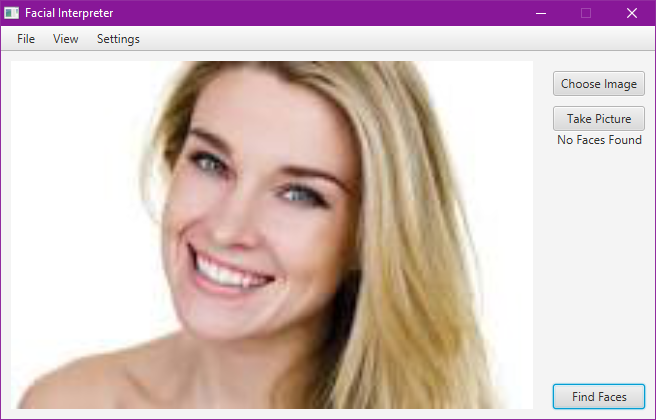

Projects
Facial Interpreter Software September 2016
- Application & Design
-
The focus of this project was to have a quick development cycle. The deadline was 2 weeks, so as a group of 4 people, we looked into a multitude of APIs that would make our lives easier. In the design process, the group decided to discuss only how each module would be connected and what each module would do. Then, the modules were divided so that everyone could work at the same time. I worked on the front-end with a JavaFX UI that was expidited by the JavaFX SceneBuilder software. The module I worked on was simply to create a UI for the users to upload an image, show what faces were in the image, and show metadata about the faces found. Each face had meta-data about the user that included name, sex, age, and last appearance in an image. To do this, I passed an image to the facial recognition logic written by another student which would return me information the UI required. Below are links to view different aspects of the project.
 Picture of the UI - Skills/Tools Learned
- In this project, I learned how to use JavaFX to its fullest while also learning how to use a computer's camera to take pictures. It was also one of the first group projects that had such a short development cyle, so I taught myself to plan out my subsection quickly and thoroughly.
Top Hat Clone November 2016
- Application & Design
The goal of this project was to create a software like Top Hat. Top Hat is an online service that is starting to replace clickers at Iowa State University. These clickers allow students to respond to in-lecture questions quickly and easily. Top Hat does this, but online with any device. So, a teacher could ask a question to the class, and the class would input an answer to that question and the teacher could view the results. As a group of 3 people, we had 3 weeks to make a Top Hat Clone. As there were only 3 of us, we opted for android and desktop support only. The desktop application would allow users to create a question, ask the question, and receive results. The android app would display the question and allow the user to answer. We needed a server to deal with the complexities of communication, so after some research we opted for a NodeJS server using Socket.IO for communication. For simplicity's sake, the applications were made in Java. We found a client-side library for Socket.IO and we went split the work into 3 sections: the desktop, the server, and the app. My work was on the desktop app. Since I had 3 weeks, I spent the first week creating the module diagram.
I started by implemeting a saving system which worked flawlessly using reflection to see the contents of the save data. Then, I made a facade layer to the Socket.IO library that converted my application data to JSON Strings and vice-versa. Finally, I created a File System class that abstracted both the Socket.IO facade and the saving system from the rest of the application. Then, I got started on the UI. Having spent too much time on the first screen that would allow you to save and load data, there was not enough time to complete the other sections. Since time was of the essence, I made a quick mock-up of the other UIs screen, added basic functionality and got them working. In the end, I wasn't able to finish everything in the design diagram, but we got the project to work. Here's a video of it working: https://www.youtube.com/watch?v=b3EWTb_UrJs .
- Skills/Tools Learned
- This project taught me a lot about how much time programming actually takes. In addition, I learned how much better I need to be in time-managment. Finally, I learned proper abstraction techniques.

Rat Pack Studios January 2015-May 2015
- Application & Design
-
I was tasked with creating the Website on which these games would be uploaded and played. There were 3 webpages to make: the sign-in page, the game-select/upload page, and the game-playing page. The sign-in page dealt with OAuth2 sign-in support to allow users to sign-in with their Google accounts. The game-select/upload page had support for uploading games, and then either starting a game or joining a game already in process. To upload a game, a key would be created that gave the Development Application permission to upload. After the game was uploaded, the user could then launch the game they had just created. The game-playing page contained a chat system and controls for leaving a game, and kicking other users out of the game. This page was the most difficult to create due to the restriction of not having client to client communication. This problem was solved with the heartbeat system. You can view a video of the project here, or you can view the video at the Website linked above.
The heartbeat system worked like this: at every time interval, a request would be made to the server to write to a shared file on the server. Any data that needed to be sent to another client and data stating the client had visited the file was saved. In addition, any new data in the file would be accessed and returned from the server request. If client x noticed that it had already visited the file before, it would look to see if every other client in the room had visited. If any client didn't visit, they would be marked as missing. If a missing client visits, they remove the "missing" mark. Any missing client who didn't visit was kicked from the room. Then, client x would mark every client as "not visited" and this process repeats like a heartbeat.
- Skills Learned
This project taught me a lot about the web development process. Also, I learned how restrictions placed at the begininng of projects can lead to inventive solutions.